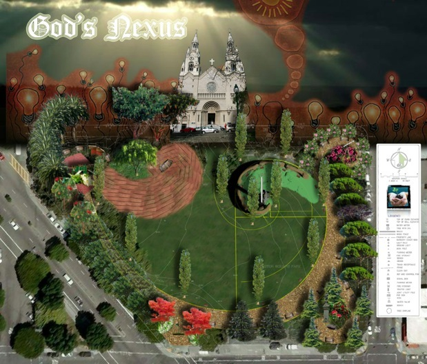
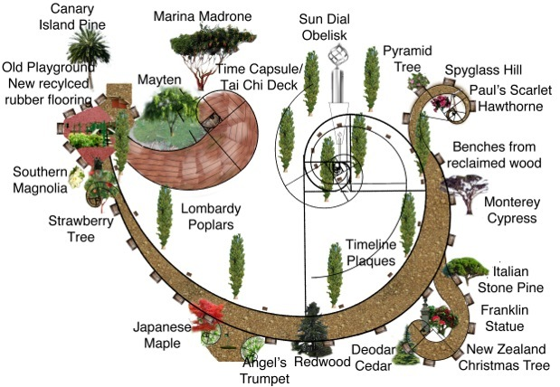
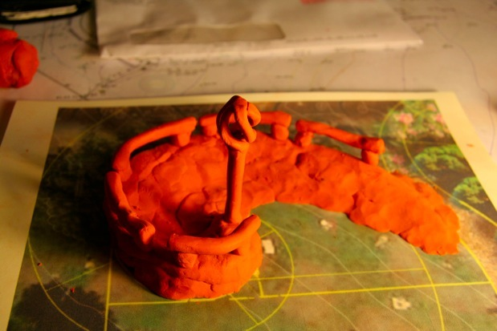

God’s Nexus


I was inspired by Charles Jencks work (summary precedent study.pdf).

This redesign of Washington Square Park, (in San Francisco North Beach) called ‘God’s Nexus’, focuses on the adjacent catholic church as the central focal point. The current site does not relate to the church at all, because the park is much older. Thus, the site will be opened up, and there will be a particularly good vista from the top of the Fibonacci Spiral Mound. There is various Fibonacci geometry throughout the site, as it is God’s geometry. Around the Fibonacci spiral is a series of timeline plaques that reflect the history of the park. They will be placed chronologically, with the most recent toward the obelisk.

Thus, the obelisk represents the present, which spirals into the playground, which is the future. At each point of termination is some representation. The Franklin statue has been moved to the southeastern side of the site, and represents science and history. On the northeastern terminal point is a spyglass. This will have a good view of coit tower, and the park in general. This represents looking to the future and looking to God to see which path to take, as the spiral splits from the main Fibonacci path, it represents a different future, and the potential for new futures. Finally, on the new Tai Chi Deck made from recycled HDPE is the time capsule, displayed in a wooden structure. This could be solar powered, and then lit at night, or simply have night uplighting connected to the grid. Again, this represents the past, and how history and technology provide lessons for the future.

The Fibonacci spiral occurs in many life forms, from the size of a snail to spiral galaxies, it seems to be the shape of our universe. At the terminus of the Fibonacci spiral is this obelisk shaped sculpture that will act as a sundial. God is seen as the sun in virtually all religions, so reflecting God’s light is an apt move. The sculpture at the top of the obelisk is a secular twisted spherical structure that is divided in four parts, representing the four seasons. The original cross was a zodiac symbol showing the seasons of the year, and the pagan cross can be seen in virtually all religions. So this structure is essentially the pagan cross in a spherical three dimensional form, and thus does not carry the baggage of any single religion, and thus is more universal.